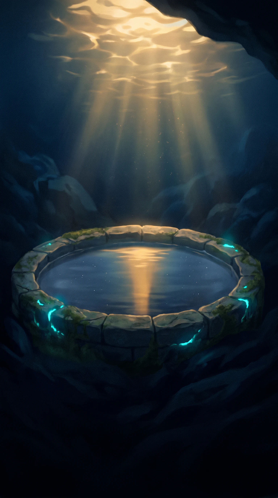
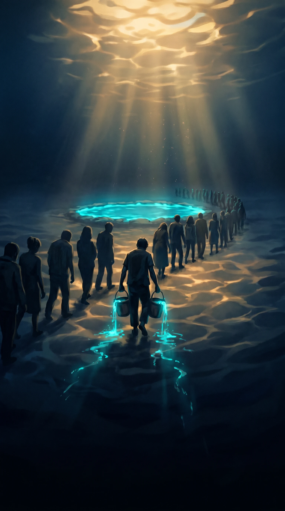
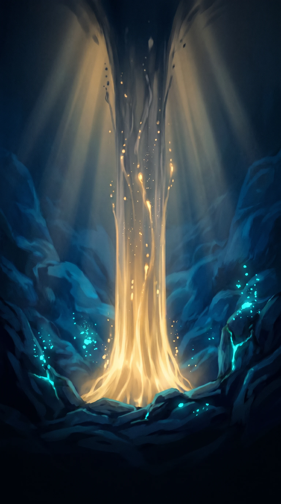
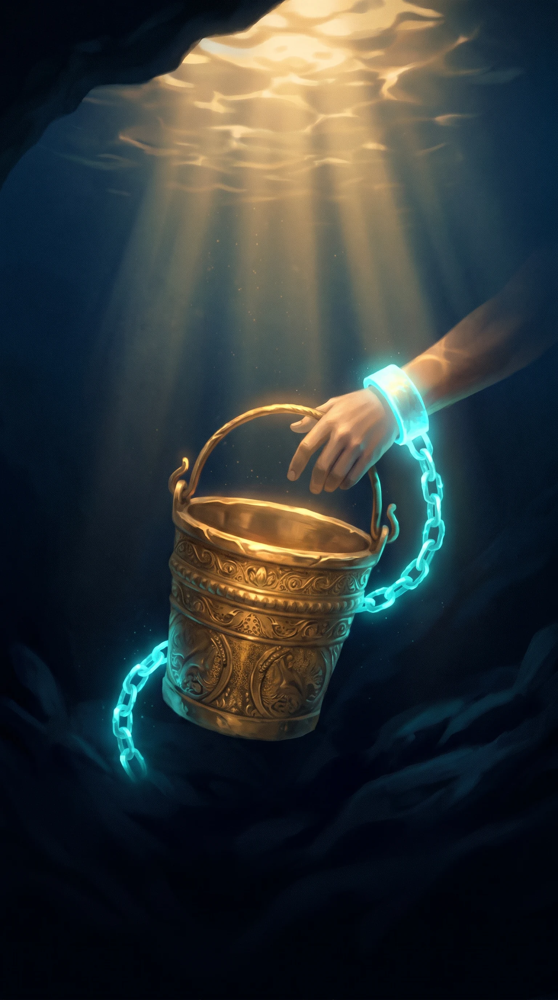
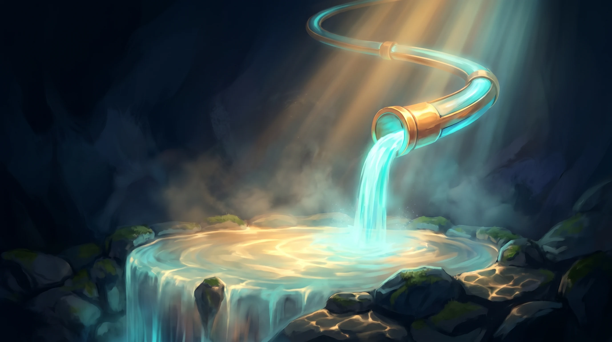
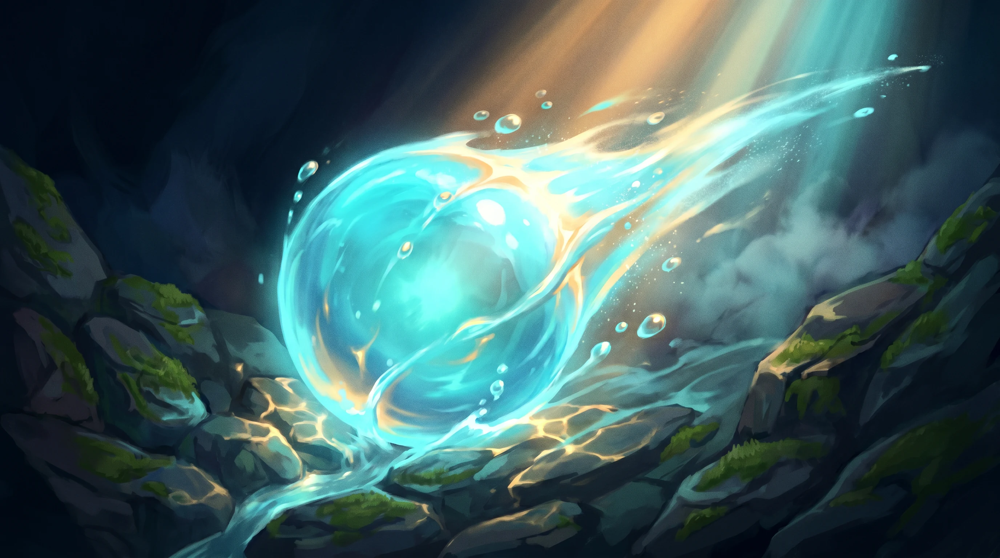
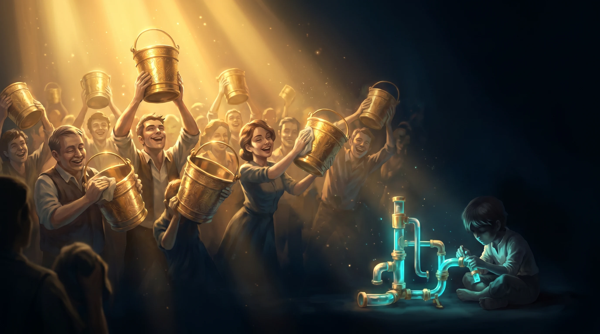
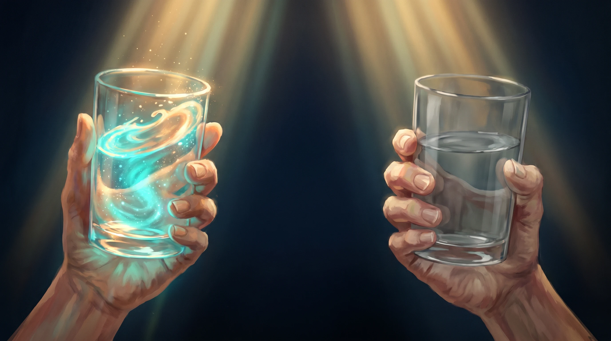

Para ti, mamá
Los baldes y la cañería
Hay cosas que no soy capaz de explicarte en palabras. Así que le pedí a una inteligencia artificial que me ayudara a dibujarlas — con agua, y con luz. Con esto quiero que entiendas por qué me siento así.
01 — El estanque
Cada vida es un estanque que hay que llenar.
Imagina que tu vida entera es un estanque: tu calma, tu libertad, todo lo que te sostiene, medido en agua. Nadie elige con cuánta empieza — hay quien nace casi lleno y quien nace casi seco. Yo tuve suerte en una cosa: desde el primer día cayó sobre mí un agua que no tuve que merecer, tu amor. Esa nunca me faltó. Todo lo demás, mamá, hay que salir a juntarlo.

02 — El sueldo
Casi todos cargan baldes.
Vas a la fuente, llenas un balde y lo cargas. Todo bien… hasta que preguntas: ¿el estanque de quién estás llenando? Cuando trabajas por un sueldo, cada balde que cargas no cae en TU estanque: cae en el del dueño del estanque. A cambio, al final del mes te devuelven algo de agua para el tuyo — un balde, o dos o tres si destacas, siempre un poco más que al resto. Pero es apenas una parte de todo lo que echaste en el estanque de otro. Por eso corres todo el día y el tuyo casi no sube.

03 — El tiempo
Cada balde cuesta algo que no vuelve.
Tus horas. El dinero perdido se recupera; una hora, jamás. Cambiar tus horas por ese balde de agua es el trato más caro que existe, porque pagas con la única agua que nunca se vuelve a llenar. Cuando me dicen «trabaja para llenar tu estanque», ustedes escuchan seguridad; yo escucho el precio: mi vida entera, hora tras hora, llenando el estanque de otro. No es que no quiera trabajar, mamá. Es que sé exactamente cuánto cuesta.

04 — Las esposas de oro
El balde más peligroso es el dorado.
A veces el agua que te devuelven por cargar es un poco más que al resto: un buen sueldo, cómodo, admirado. Y ahí está la trampa: es tan cómodo que da miedo soltarlo. Sigues llenando el estanque de otro para siempre, no por necesidad, sino por miedo a perder la comodidad. Le dicen estabilidad. Yo le tengo más miedo a pasarme la vida llenando el estanque de otro que a empezar de cero, cavando mi propia cañería.

05 — Lo que yo construyo
Pero existe otra forma. Y casi nadie la nombra.
En vez de cargar baldes toda la vida, construir una cañería: algo que lleve agua a tu estanque solo, aunque tú no estés cargando. Cuesta muchísimo y al principio no cae ni una gota; todos te preguntan por qué pierdes el tiempo parado. Pero el día que queda lista, llena tu estanque mientras duermes — y esas horas que ya no gastas cargando las das a lo que de verdad importa. Los demás ven a alguien sin balde; lo que no ven es la cañería que va a llenarlo mucho más rápido.

06 — Cómo se construye
No se cava con los brazos. Se cava con la cabeza.
Con dos brazos hay un tope: solo cargas lo que aguanta tu cuerpo en 24 horas. El cerebro no tiene ese tope. Hay dos formas de usarlo: contratar a otras personas para que carguen contigo, o —lo que de verdad cambia todo— crear una herramienta que le sirva al estanque de miles de personas, y que ellas te paguen con su agua. Una herramienta no se cansa, no duerme, no tiene solo dos manos. Mientras tú descansas, sigue llevando agua a tu estanque. Eso es una cañería.

07 — Guardar no basta
Guardar no llena el estanque. La cañería sí.
Me dirás: junta de a poco, guarda un poco más que el resto y algún día llegarás. Ojalá fuera así. El agua guardada se queda quieta: un poco más que los demás no lo llena más rápido, solo lo deja un poquito más lleno. Lo que cambia todo no es guardar — es la cañería. Una vez que corre, el agua llega sola, y cada día llega más. No estoy juntando gotas: estoy cavando el canal por donde después va a correr un río.

08 — Por qué casi nadie la ve
Casi todos cargan baldes toda la vida — y son felices.
Y no es que sean tontos, mamá. Es que nadie les mostró nunca que el estanque se podía llenar de otra forma. Si creciste viendo a todos cargar baldes, cargar baldes no es una elección: es lo único que existe. Nadie echa de menos un río que nunca supo que existía. Por eso son felices — y está bien que lo sean. A mí me pasó lo contrario: me tocó ver el río. Y lo que uno ve, ya no lo puede dejar de ver.

09 — La luz
Creían que un título me haría destacar.
Y en su época era verdad: un título era como una vela encendida en un salón a oscuras — una sola se veía desde lejos. Pero hoy casi todos tienen su vela. Salones enteros de velas iguales. Cuando todos tienen la misma luz, la vela ya no te distingue: te vuelve uno más. Para que te vean de verdad hoy no necesitas otra vela — necesitas ser luz propia, un faro que alumbre aunque los demás se apaguen. El faro y la cañería son la misma cosa: algo tuyo que da luz —o agua— sin que tengas que sostenerlo con las manos toda la vida.

10 — La comparación
Me enseñaste a destacar. Y para eso hay que compararse.
Y te lo agradezco, mamá, de verdad. Pero para destacar hay que mirar al lado y medirse con el resto: ser mejor que los que tienes cerca. Ese hábito me sirvió de niño… y de grande se me dio vuelta. Porque dejé de compararme con los de al lado. Sin darme cuenta, empecé a compararme con todo.

11 — Represas y vasos
Veo toda el agua del mundo. Y ya no puedo dejar de verla.
Cuando la miro entera, veo algo que me pesa: hay gente con represas —ríos enteros guardados, agua que trabaja sola— mientras nosotros intentamos llenar el estanque a vasos. No lo digo con rencor. Lo digo porque, una vez que lo ves, no lo puedes des-ver. Y llenar un estanque a vasos, sabiendo que existen las represas, se vuelve insoportable.

12 — La alta capacidad
Nací con un cerebro que llena más rápido.
De niño llenaba más rápido que el resto sin esforzarme; otros cargaban con todas sus fuerzas y no me alcanzaban. Tú lo viste antes que nadie, mamá — antes de que tuviera nombre. Creíste que era un regalo entero. Y lo era… pero era solo la mitad de la historia.

13 — Mi TDA
Mi cerebro solo se enciende con el agua que brilla.
Lo nuevo, lo difícil, lo que me apasiona — eso lo levanto sin esfuerzo. Pero el agua gris y quieta —lo aburrido, lo repetitivo— no la puedo mover, aunque pese menos que una pluma. No es flojera, mamá, aunque durante años me lo dijeron y yo mismo llegué a creerlo. Tiene nombre: se llama TDA, y no lo elegí.

14 — Cazador entre granjeros
No estoy roto. Soy un cazador entre granjeros.
Mi cabeza está hecha para cazar —el peligro, lo nuevo, la emergencia— no para regar la misma hilera gris cada día. Por eso lo intenso me sale fácil y lo monótono se me hace un muro. Es un regalo enorme y una dificultad real al mismo tiempo. No es contradicción: es mi combinación exacta. Y explica casi todo lo que los demás nunca entendieron de mí.
15 — El don y la condena
El mismo cerebro que fue mi regalo…
Aquí está lo que más me cuesta decirte. El cerebro que de niño me hizo llenar más rápido que todos… es el mismo que me mostró las represas. El regalo y la condena son la misma cosa. Si mi cabeza fuera común, cargaría baldes tranquilo y sería feliz, como casi todos. Pero no puedo: el mismo cerebro que me hizo bueno para el balde es el que me obligó a ver más lejos. Y ver más lejos tiene un precio — ya no te sirve el camino corto.

16 — El muro
La cañería se construye con miles de baldes grises.
Y aquí está el nudo de toda mi historia. No me falta cerebro: lo tengo. No me falta ver la cañería: la veo clarísima. Lo que me separa de ella son los miles de baldes grises que hay que cargar cada día para construirla — justo el agua apagada que mi cabeza no logra levantar. Mi pelea no es contra nadie afuera. Es contra eso: aprender a mover el agua gris el tiempo suficiente para terminar el canal.

17 — Lo que más duele
Ver todo… y verlo solo.
Ver la cañería, las represas, la puerta abierta — verlo todo con una claridad que quema — y darme cuenta de que la mayoría no ve lo mismo. No porque no puedan: porque nunca les mostraron que había algo más que baldes. Yo no puedo apagar esa vista aunque quiera. Y cargar con ella, solo, cansa más que cualquier balde.

18 — Desde afuera
Cavo el canal, y ven a alguien parado.
Me pongo a cavar la cañería y desde afuera parece que pierdo el tiempo. Parece que estoy seco, quieto, mientras todos cargan sus baldes con orgullo. Nadie ve el canal por dentro. Me miran cavar en la tierra y me preguntan cuándo voy a conseguir un balde de verdad. Intento explicarlo… y las palabras nunca alcanzan. Por eso terminé haciendo esto — para que al menos tú lo vieras.
19 — Quédate tranquila
Sé lo que te preocupa. Y quiero que estés tranquila.
Sé que te preocupa que ahora no esté llenando el estanque. Que esté cavando una cañería en un pozo seco y me quede con el estanque vacío. Tienes razón en preocuparte, mamá. Pero eso mismo que me deja ver la represa completa es también lo que me protege: si algún día no me queda otra que llenar el estanque a la fuerza —porque necesito agua para vivir y ustedes ya no están— sería el mejor cargador de baldes que puedas imaginar. Esa capacidad no se me va a ir nunca. Por eso puedo arriesgar. Y aunque pasara la vida entera cavando una cañería que nunca diera agua, dolería mucho menos que cargar baldes como todos, habiendo visto la represa entera. Prefiero fallar intentando el río, que ganar cargando el balde con los ojos cerrados.
20 — Y esto es solo la superficie
Eso es lo que me duele.
No me duele que sea difícil. Me duele estar solo en cómo lo veo, querer que entiendas y no tener las palabras. Y te soy honesto, mamá: esto es apenas lo de arriba. Hay mucho más de fondo, cosas que todavía no sé ni cómo nombrar. Por ahora solo quería que entendieras esto: no elegí el camino difícil por rebelde. Lo elegí porque veo el agua, y ya no puedo dejar de verla.
Gracias por ser la única agua que cayó en mi estanque desde el primer día, sin que tuviera que merecerla.
Te ama, tu hijo.